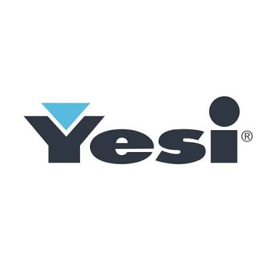
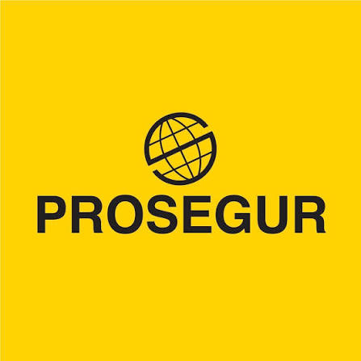
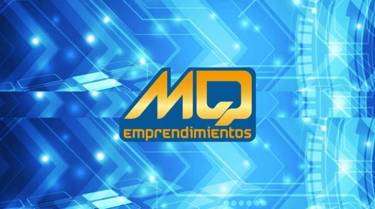
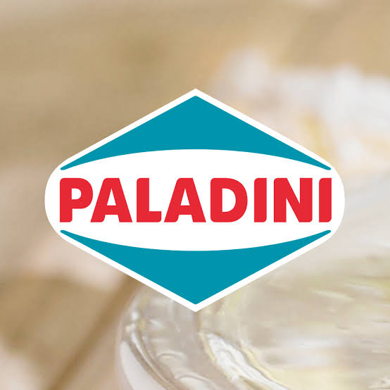

Mis trabajos, del más reciente al más antiguo.

Soy Analista de Datos y Auditoría, con experiencia en control de procesos productivos, gestión de stock, análisis de información, automatización y desarrollo de soluciones tecnológicas.
Actualmente gestiono los movimientos de stock de la empresa mediante el sistema Bejerman, realizo controles y auditorías sobre producción, ciclos de máquinas, cantidades, pesos de piezas descartadas, materiales destinados a molienda y movimientos entre sectores. También realizo cruces de información para detectar inconsistencias, errores de carga y diferencias entre los datos registrados.
Uno de mis principales enfoques es la automatización y mejora de procesos. Desarrollé una aplicación en Google AppSheet, conectada con una base de datos en la nube y procesos locales, que permite automatizar gran parte de mis tareas de relevamiento y control.
Actualmente desarrollo una aplicación web en PHP para continuar digitalizando y optimizando procesos internos.
También elaboro reportes para gerencia utilizando Looker Studio, Excel y Google Sheets, y actualmente desarrollo soluciones de análisis y visualización en Power BI.
Estudio Analista Universitario en Datos e Inteligencia Artificial. Como proyecto aplicado, desarrollé un asistente de IA para trabajar con información contenida en hojas de cálculo, orientado a facilitar la consulta y análisis de datos.
Mi experiencia también incluye coordinación con diferentes departamentos y gestión de reclamos del personal de producción, desarrollando capacidad de comunicación, resolución de problemas y manejo de situaciones bajo presión.
Mi perfil combina procesos + datos + auditoría + tecnología, con especial interés en Data Analytics, Business Intelligence, automatización, bases de datos, desarrollo de software, análisis funcional e Inteligencia Artificial.
Mi objetivo es desarrollar soluciones que permitan automatizar procesos, mejorar la calidad y trazabilidad de los datos y facilitar la toma de decisiones basada en información confiable.
Gestiono la auditoría de datos, control de stock y seguimiento de métricas operativas, elaborando informes de producción clave para el negocio.
Integración de aplicaciones (AppSheet) con bases de datos cloud relacionales en PostgreSQL y Supabase.
Creación de sitios e interfaces con WeWeb y Google Sites, en continua formación como desarrollador Fullstack.
Digitalización de tareas operativas mediante Google Sheets y ecosistemas de trabajo conectados.
Aplicación multiplataforma (Android, iOS y Windows) con login y cuatro formularios de carga: Ciclos, Molienda, Bolsas y Planillas del molino. Construida con Supabase.
Panel de auditoría industrial en Supabase, con login y bloqueo, indicadores clave, balance auditado frente a los molinos y gráficos 2026.

Me desempeñaba en tareas administrativas y de seguridad. Control de personas, insumos, etc (mediante sistema de cámara CCTV) cargando los datos por sistema interno del condominio y la empresa.
Coordinaba las tareas que se debían tratar con vigiladores de otros sectores, previo aviso de la administración. Además de tener a cargo las disconformidades, reclamos e inquietudes en donde se debía dar una respuestas rápidas a situaciones complejas.

Mis tareas consistían en atender los reclamos de los usuarios finales en cuanto a sistema y desarrollar nuevas implementaciones en lenguaje Progress. Monitorear que se hayan realizado los backup de las empresas e informar cuando no se realizaban.

Entre mis tareas se encontraba realizar pedidos para otros sectores como feteados, expedición, etc. Revisar los stock de las mercaderías en las cámaras, realizar las planillas correspondientes del turno sumado al manejo de las maquinarias para realizar la inyección, molienda de CMS (Insumo que se inyecta en la carne mediante agujas). Aprendí superficialmente el sistema SAP.